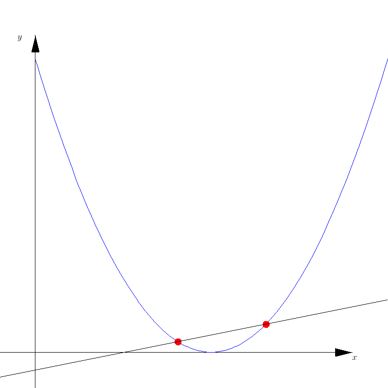
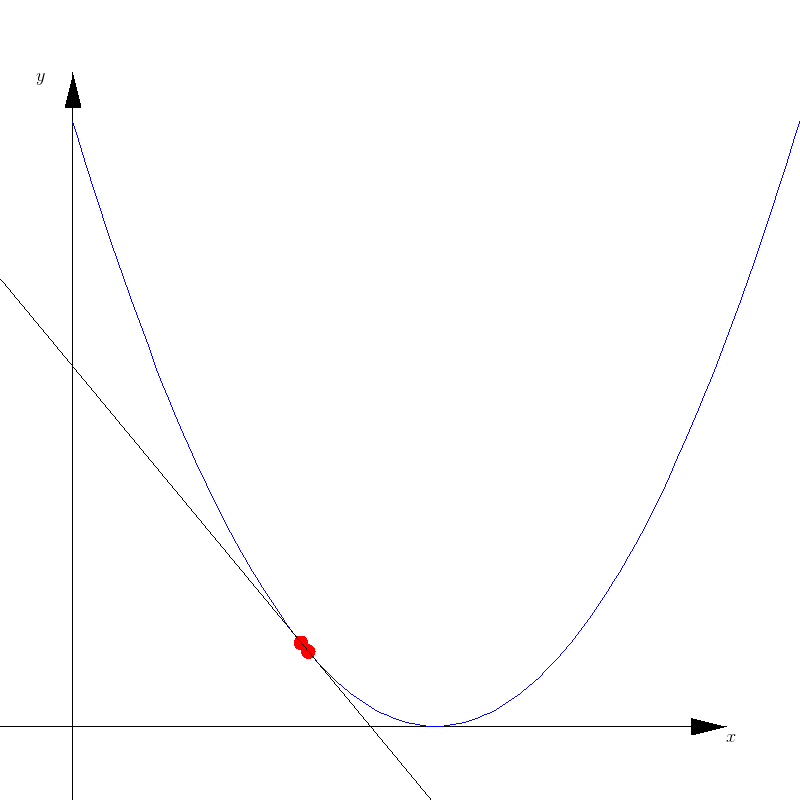

Intro
This article will summarize the basics one-dimensional calculus, by discovering calculus using simple problems. In that way, we will get much more the intuition of calculus and see why it is useful!Functions
First of all, before writing about calculus we must know what a function is. A function is like a mathematical machine that receives some input and returns an output. The input and output could be anything. Here I will just write about functions of one input or univariate functions (one variable functions), but in general, a function can have multiple inputs.Every function has a domain which is the set of all possible input values and a co-domain which is the set of all outputs. A function assigns only one output for each input.
A typical notation for a function is $F: X \rightarrow Y$ where $F$ represents the function name, $X$ is the input set and $Y$ is the output set. For a particular value $x \in X$, one writes $y = F(x)$, where $y \in Y$, in order to evaluate the function $F$ on the input $x$.
Consider the following examples of functions :
- $F: \text{Dollars} \rightarrow \text{Euros};\;\;\;\;\;F(1) = 0.86$
- $F: \text{Countries} \rightarrow \text{Capitals};\;\;\;\;\;F(\text{"Portugal"}) = \text{"Lisboa"}$
- $F: \text{Words in English} \rightarrow \text{Words in Portuguese};\;\;\;\;\;F(\text{"Hello"}) = \text{"Ola"}$
- $F: \text{Problems} \rightarrow \text{Solutions}$
In this article we will only refer to functions $F : \mathbb{R}\rightarrow \mathbb{R}$. Which are the functions that we are interested in Calculus.
Let $f : x \in \mathbb{R}\rightarrow y \in \mathbb{R}$ be: $$ f(x) = 2x + 1$$ We can compute $y$ in the follow way:
$x = $
A good visualization of a function is to see the graph of one (check Fig.1), where the curve represents all the points $(x, f(x))$. Any curve that you can imagine such
that there are no two points in the curve with the same $x$ coordinate, is a valid graph of a function. For more about functions check wikipedia .

Fig.1 Graph of a function
Linear Functions
Now let me give you a problem, suppose you want to find a function $f: x \in \mathbb{R} \rightarrow y \in \mathbb{R}$, such that for input $a$ we will get $f(a)$ and for $b$ the output $f(b)$. You want also that this function must also fulfil the condition that the graph is a continuous curve, that is you can draw this curve without taking the pencil from the paper.A possible solution is as follows. Imagine a function as a graph, then we already have two points of the curve $(a,f(a))$ and $(b,f(b))$. Now just trace a curve between those two points (as long as follows the rules above) and voila! The problem with such method is that it isn't very precise, we need a way to compute $y$ given $x$ in a mechanic /computational way. The most simple curve I can imagine is a straight line between the two points $(a,f(a))$ and $(b,f(b))$.

Fig.2 Linear function
This line can be found by looking at figure 2. We see two triangles, triangle $t =\left < (a,f(a)) , (x,f(a)), (x,f(x)) \right >$ and triangle $T = \left < (a,f(a)),(b,f(a)),(b,f(b))\right >$. Its easy to see that all angles of $t$ are equal to the angles of $T$, hence the triangles are similar (this means $T$ is scaled version of $t$), which mean that: $$(x - a) k = (b - a)$$ $$(f(x) - f(a)) k = f(b) -f(a) \;\;\;\;\;\;\;(1)$$ Hence $k = \frac{b-a}{x-a}$ , then by substituting $k$ on (1) we get : $$ f(x) = f(a) + \frac{f(b)-f(a)}{b-a} (x - a)\;\;\;\;\;\;\;(2)$$ Equation (2) is the equation of the line. I leave as an exercise to check that in fact, this equation solves our problem (just compute $f(a)$ and $f(b)$ using (2)). Plus we can find any other point on the line using this equation.
There is still another way to get the line equation that I want to explain. This approach let us see functions in a different geometric way such that it will be easier to extend to more variables. The idea is to think of a function as a transformation of the space of inputs to the space of outputs. The real x-axis will be deformed, stretched, squeezed and reversed into the y-axis. In Simulation 1 we can see each point of the x-axis being mapped by $f$ to the y-axis.

Fig.3 Linear function as a transformation of spaces
Lets find the line equation with this interpretation of functions. I would say that is easy to find a transformation between the $[0,1]$ interval to the $[a,b]$ where $a < b$ and $a,b \in \mathbb{R}$. Start with a point $a$ then add a vector $v = b - a$ ( check image Fig.3 ) you will end up with point $a + (b - a) = b$. Scale $v$ with $t\in [0,1]$ and add it again to $a$, you would get a new point in between $a$ and $b$ (eg. if $t = \frac{1}{2}$ then you will get $a + \frac{v}{2} = \frac{a + b}{2}$, which is half distance between $a$ and $b$ ). If you consider all the points of the form $$x(t) = a + vt ,\; t\in[0,1] \;\;\;\;\;\;\;(3)$$ You will get all the points in the interval $[a,b]$. Here we created a simple linear function from $[0,1] \rightarrow [a,b]$. Using this knowledge we can build any function between intervals.

Fig.4 Finding a function between intervals using two simple functions.
Lets say we have the same problem as before, we want to create a simple continuous function $f$ from $[a, b]$ to $[f(a), f(b)] = [f_a, f_b]$. We found from fig. 4 that we can deduce $f$ by computing $\alpha ( \gamma^{-1} (x))$. But wait a minute, why would someone build two functions in order to find just one? Seems counterproductive, right? Let me fill you with the details, as said we want to find $f : x \in [a, b] \rightarrow y \in [f(a), f(b)]$, but this is not trivial unless we knew fig. 2. But it is trivial to build functions from $[0,1]$ to any other interval as we demonstrated before ( fig. 3 ).
So we build two trivial functions $\gamma : t \in [0,1] \rightarrow x \in [a, b]$ and $\alpha : t \in[0,1] \rightarrow y \in [f_a, f_b]$ then compute $f(x_0)$, where $x_0 \in [a, b]$ as follows : Compute the inverse of $\gamma$, which is $\gamma^{-1} : x \in [a, b] \rightarrow t \in [0,1]$. Then apply $\alpha$ to $\gamma ^{-1} (x_0)$, and you are done ( check fig.4 for a visual aid )! To finalize this idea lets compute $f$ using this auxiliary functions and see if we get the same result as equation (2). Using equation (3) we find that: $$\gamma(t) = a + (b - a) t$$ $$\alpha(t) = f_a + (f_b - f_a) t$$ Now to compute $\gamma^{-1}$ we must find $t$ in terms of $x = \gamma$. $$x = a + (b-a) t$$ $$x - a = (b-a) t$$ $$\frac{x-a}{b-a} = t$$ $$\gamma^{-1}(x) = t \;\;\;\;\;\;\;(4)$$ Finally we can compute $f$ by composing the two functions as in fig. 4, and we get : $$f = \alpha ( \gamma ^{-1} (x) ) = f_a + (f_b - f_a) \gamma^{-1} (x)$$ Substituting (4), $$f(x) = f_a + (f_b - f_a) \frac{x - a}{b - a}\;\;\;\;\;\;\;(5)$$ And (5) is equal to (2)!! This method is sometimes easier to generalize to higher dimensions as you will see in future posts.
Note that if $(x - a) = 1$ then $x = a + 1$ hence $f(a + 1) - f(a) = \frac{f(b) - f(a)}{b - a}$ which means $\frac{f(b) - f(a)}{b - a}$ is the rate of change ( gradient ) of this curve. This means that for a step $ h $ in the domain, $f$ will change by $h \frac{f(b)-f(a)}{b-a}$, that is $$f(a + h) - f(a) = \frac{f(b) - f(a)}{b - a} h$$.
Derivatives
Let me give you another problem, imagine that someone gave you a machine that computes a function $ f: x \in \mathbb{R} \rightarrow y\in \mathbb{R}$. That person tells you that the graph of the function is a smooth curve. Imagine also that you can't visualize that graph. Then he asks you if the function at a particular $x$ is increasing or decreasing? And how much it is increasing or decreasing?So here we are asked to define a way to measure how much a function is increasing or decreasing locally. If we could visualize the function then the first question should be easy, but the issue is that we can't visualize it. This is interesting in terms of computation since computers can only evaluate the function but cannot see a graph of a function. There are other motivations to do such definition, such as getting a precise measurable way of saying that a functions is increasing/decreasing (and to what degree). Also we can't visualize functions with more than two inputs (this is useful for future posts).
Lets start with simple functions. Let us use function of a line between two points $(a, f(a))$ and $(b, f(b))$. As we saw this is defined by (2) : $$f(x) = f(a) + \frac{f(b) - f(a)}{b - a} (x - a)$$ We saw that $\frac{f(b) - f(a)}{b - a}$ is the rate of change of (2) and thus it tell us how much the linear function change per unit of the space in the domain. For different functions we could construct a line between nearby points $(x, f(x))$ and $(x + h, f(x + h))$ ( $h > 0$ ), this line approximates function $f$ near $x$ check fig.5. Using this line we can compute its rate of change and estimate the rate of change of $f$ at $x$. The rate of change of this line is : $$df(x, h) = \frac{f(x + h) - f(x)}{h}$$ This approximation depends on $h$, as $h$ gets closer to zero the better the line approximates the function at $x$. Still, we want to get the best estimate for the gradient, so how can we select the right $ h$? If $h$ is too big then $df$ will be a poor estimate of the rate of change at $x$ (and what is too big ?). If too small such as $h = 0$ we will get $\frac{0}{0}$, which is undefined. Even if we choose a particular small value of $h$ ($h > 0 $), there are still an infinite number of numbers $\varepsilon > 0 $, which are $\varepsilon < h$ such that $df(x,\varepsilon)$ is a better estimate of the gradient of $f$ at $x$.
Now we are in a bit of a dilemma here since we don't know how to define a proper $h$ such that $df(x, h)$ defines a rate of change of the function at $x$.

Fig.5 Secant approximation
To solve this issue we can think of what I said earlier. As $h$ gets closer to $0$ the line formed by $(x, f(x))$ and $(x+h, f(x+h))$ better approximates the function near $x$ (check fig.6 and simulation 2), hence this line is changing less and less therefore this line is converging. Although $h$ must be $h > 0$, we can say the same about $ df(x, h) $ and thus it is converging to some number as $h \rightarrow 0$.

Fig.6 Tangent approximation
This line of thinking let mathematicians to define the concept of derivative of $f$ at $x$: $$f'(x) = \lim_{h\rightarrow 0} \frac{f(x+h) - f(x)}{h}\;\;\;\;\;\;\;(6)$$ Which is just the rate of change of the line between $(x, f(x))$ and $(x + h, f(x + h))$ as $h \rightarrow 0$, that is $\lim_{h\rightarrow 0} df(x, h)$. The intuitive meaning of (6) is to define the instantaneous rate of change of $f$, by the value $df(x,h)$ is converging when $h\rightarrow0$. Note that this definition only applies to functions that have such limit number. This might not be the case for all functions and thus let me simplify the problem by only allowing functions that have derivative for all $x$. These functions are called differentiable functions. A differential function $f$ have a nice property of having a tangent line at every point, this is the limit line we defined before. Using (5) and (6) we can define that tangent line at any point. Let $g_a(x)$ be such tangent line of $f$ at $a$ : $$g_a(x) = f(x) + f'(x)(x - a) \;\;\;\;\;\;\;(7)$$ That is fine but we didn't define what a limit really is. There are some questions in the air. what is $\lim_{h \rightarrow 0} df(x,h)$ ? What is the limit of a function $f$ as $x$ approaches a number?
This will take us to a little digression to limits.
Limits interlude
Now we have an intuitive notion of limit, but how can we formalize this notion. How can we measure that functions are indeed converging to a number? In (6) we have used this intuitive notion, but not defined what it is. In order to simplify the problem I will try to formalize instead the following limit : $$ \lim_{x\rightarrow a} g(x) \;\;\;\;\;\;\;(8)$$ Note that we can describe $\lim_{h \rightarrow 0} df(x, h)$ as $\lim_{h \rightarrow } g_x(h)$, by saying that $g_x(h) = df(x, h)$ ( we can think of $x$ fixed and $g_x$ as a function of just $h$). Still, I find it hard to define limits in this form because I don't know how to vary $h$ or $x$ to $0$ or $a$. The trick is to think of sequences. Sequences are functions of the form $s : \mathbb{N} \rightarrow \mathbb{R}$. Consider the following examples of sequences :- Sequence of odd numbers : $1, 3, 5, 7, 9, \dots$
- Sequence of prime numbers : $2, 3, 5, 7, 11, \dots$
- Sequence of reciprocals : $\frac{1}{1}, \frac{1}{2}, \frac{1}{3}, \frac{1}{4}, \frac{1}{5}, \dots$
- Fibonacci sequence : $1, 1, 2, 3, 5, 8 , \dots $
In order to prove such claim with definition (10), we need to find a $N$, such that, given a $\varepsilon > 0$ we have $d(N+1) < \varepsilon$ : $$d(N) < \varepsilon $$ $$\left | \frac{1}{N} \right | < \varepsilon $$ $$ \frac{1}{N} < \varepsilon $$ $$ N > \frac{1}{\varepsilon} $$ Having the function $N(\varepsilon) = \frac{1}{\varepsilon}$, we finalize our proof.
Since I am a numeric guy I would like to try some numbers. Let $\varepsilon = 0.1$ then $N(\varepsilon) = 10$ , so when $n > N$ we have : $$\left | \frac{1}{N+1} \right | < 0.1 $$ $$\left | \frac{1}{11} \right | < 0.1 $$ That is nice, by finding $N(\varepsilon)$ we prove the limit and also get a nice tool to find an $N$ such that $d(N+1)< \varepsilon$.
To conclude let's prove a limit of a function using the whole process :
Let $$\lim_{x\rightarrow 0} 2x + 1 = 1$$ First substitute $x$ with a sequence $x(n)$ that converges to 0. Such sequence could be $x(n) = 1 / n$. Now we transform our problem in a limit of a sequence:
$$\lim_{x\rightarrow 0} 2x + 1 = \lim_{n \rightarrow \infty} 2 \left ( \frac{1}{n} \right ) + 1 = 1$$ To proof the limit we just need to find $N(\varepsilon)$ : $$d(N) < \varepsilon$$ $$\left | \frac{2}{N} + 1 - 1\right |< \varepsilon$$ $$\left | \frac{2}{N} \right |< \varepsilon$$ $$ \frac{2}{N} < \varepsilon$$ $$ N > \frac{2}{\varepsilon}$$ Checking some numbers, $\varepsilon = 0.01$, $N(0.01) = 200$ then $d(N+1) < 0.01$. $$d(200 + 1) = \left | \frac{2}{201} + 1 - 1\right | = \frac{2}{201} < 0.01$$ There is more that we could talk about, but let's save it for future posts. Now we end our interlude of limits.
Back to derivatives
Finally we solve our problem of measuring how much a function (differentiable functions!!) are changing at a particular $x$.Until now we have seen the derivative as a process that can be applied to any differential function, but I would like to have a closed form of a derivative of some function $f$. Can we do it ? Or we can just have an approximation of the derivative like $df(x, \varepsilon)$ for a low $\varepsilon > 0$ ?
Let us put our definition to the test. Let $f$ be the linear function $f(x) = mx +b$ ($m, b \in \mathbb{R}$) then the derivative should be the rate of change $m$. Using our definition (6) : $$f'(x) = \lim_{h\rightarrow 0} \frac{m(x + h) + b - mx - b}{h}$$ $$f'(x) = \lim_{h\rightarrow 0} \frac{mh}{h}$$ $$f'(x) = \lim_{h\rightarrow 0} m $$ $$f'(x) = m $$ Well, that was kind of obvious since by construction we based our definition of a derivative by a linear approximation of a function at a point. But let us try the polynomial $f(x) = x^2$. $$f'(x) = \lim_{h\rightarrow 0} \frac{(x + h)^2 - x^2}{h}$$ $$f'(x) = \lim_{h\rightarrow 0} \frac{x^2 + 2xh + h^2 - x^2}{h}$$ $$f'(x) = \lim_{h\rightarrow 0} \frac{x^2 + 2xh + h^2 - x^2}{h}$$ $$f'(x) = \lim_{h\rightarrow 0} \frac{(2x + h)h}{h}$$ $$f'(x) = \lim_{h\rightarrow 0} 2x + h$$ $$f'(x) = 2x $$ As an exercise you can try to find the derivative of $f(x) = x^n$ for a particular $n>2$ or for a general $n$. Before I close this chapter I would like to mention two important properties of derivatives : $$\text{ 1) }(a f(x))' = a f'(x)$$ $$\text{ 2) }(f(x) + g(x))' = f'(x) + g'(x)$$ These two properties define what is called a linear operator (but we will check that later) and that is a nice property to have. Try to proof these properties using the definition of a derivative (6).
Digression through 1D Optimization
One of the best applications of derivatives is the problem of optimization. I will be very brief here since I plan to write more about it in the future. Here I will introduce the topic for one-dimensional optimization problems and will solve one.Let us focus on just the minimization problem ( we will see later that maximization problems are equivalent, you can try to do that as an exercise ) : $$\min_{x \in \mathbb{R}} f(x)$$ This means that we want to find a $x^* \in \mathbb{R}$ such that $f(x^*) < f(x)$ for every $x \in \mathbb{R}$. Let $x^*$ be the minimum of $f$. If we assume that $f$ is smooth (differentiable) and that has only one minimum, one can say that a function will be decreasing until it gets to a minimum then it will increase. This basically tell us that $f'(x^* - \varepsilon) < 0$ and $f'(x^* + \varepsilon) > 0$ for $\varepsilon > 0$. Since the graph is smooth then $f'(x)$ is continuous, therefore we know that there must be a zero of the derivative function in the interval $[x^* - \varepsilon, x^* + \varepsilon]$. When this happens the function is not increasing or decreasing and hence it must be a minimum (by our assumptions).
Formally we can visualize this by verifying that : $$f(x^*) \leq f(x^* + \varepsilon) \text{ and } f(x^*) \leq f(x^* - \varepsilon) \;\;\;\;\;\;\;(11)$$ By using the linear approximation of $f$ at $x^*$ and (11) we will find that $f'(x^*) = 0$ : $$f(x^*) \leq f(x^* + \varepsilon) \approx g_{x^*}(x^* +\varepsilon) = f(x^*) + \varepsilon f'(x^*)$$ $$ \Leftrightarrow f'(x^*)\varepsilon \geq 0 $$ And $$f(x^*) \leq f(x^* - \varepsilon) \approx g_{x^*}(x^* -\varepsilon)= f(x^*) - \varepsilon f'(x^*)$$ $$\Leftrightarrow f'(x^*) \varepsilon \leq 0$$ From $f'(x^*)\varepsilon \geq 0$ and $f'(x^*) \varepsilon \leq 0$ we conclude that $f'(x^*) = 0$. Note that the approximation error decreases as $\varepsilon \rightarrow 0$. From the assumptions we made, in order to find $x^*$ that minimizes $f$, we just need to solve the equation $f'(x) = 0$.
Now let us solve a real problem. Imagine that you have a device that measures something in the world like temperature or distance, and that device has errors in its measurements. Let $\phi$ be a function that receives an input(e.g time, height from sea level, etc ... ) and outputs the measured quantity (temperature, air pressure, distance, etc... ). We model our device as $\phi$, and we know that $\phi(x) = y + \tau$, where $y$ is a constant and $\tau$ is a random variable . I will not discuss much of the concept of random variable but intuitively every time we measure something with $\phi$ we measure $y$ plus some noise (a value which is always different ). We could start talking about probabilities in more detail but I think is best to postpone that for a future post. Still, we can get an intuition of the problem. Having that said we state the problem as follow:
Given $n$ samples of measurements of $\phi$ at a particular $x_0$, estimate $y$ (note that $\phi$ does not depend on $x$)? Also, assume that the noise of each sample $\tau_i$ is bounded by some finite constant $\varepsilon > 0$. Assume as well that the noise is uniform, that is the samples $\tau_i$ can be a point in $[y-\varepsilon, y+\varepsilon]$ with equal probability. Someone immediately says, "take the sample average", but I would respond why? Why not the minimum of the samples or maximum or even the third sample, what is the reason to choose the mean? First, we need to note that this problem is ill-defined. Why having samples would help us estimate $ y$? Is this problem solvable (since is not deterministic)? We could apply probability theory and define the problem in a better way, but we will do as our friend Legendre and see this problem in an intuitive matter (check Victor J. Katz History of Mathematics books). Since all samples $\phi_i, i\in {1, \dots , n}$ will be around $y$, a point that is close to all the samples would be a reasonable estimate of $y$. Let us formalize this as a minimization problem : $$\min_{\mu \in \mathbb{R}} C(\mu) = \min_{\mu \in \mathbb{R}}\sum_{i=1}^n(\mu - \phi_i)^2$$ We want to find $\mu$ such as the sum of squared differences to the samples is minimum. Why choose the squared difference and not the absolute difference? Because the square difference is also a measure of distance and this one is differentiable. Check the simulation 3 to visualize the cost function of a set of instances of the problem:
Note that as $\tau$ increases the worst our estimate become. To solve our minimization problem let's notice that it fulfills our assumptions and then we find $\mu$ by solving $C'(\mu) = 0$. We must show that first the function has just one minimum and second that the function is differentiable. Notice that : $$C(\mu) = \sum_{i=1}^n(\mu - \phi_i)^2 = \sum_{i=1}^n\mu^2 -2\mu\phi_i + \phi_i^2$$ $$C(\mu) =\mu^2 n-2\mu\sum_{i=1}^n\phi_i + \sum_{i=1}^n\phi_i^2$$ We see that $C(\mu)$ has just one minimum since it is a parabola with positive coefficient in the squared term, also we see that this function has a derivative everywhere : $$C'(\mu) = \left (\mu^2 n-2\mu\sum_{i=1}^n\phi_i + \sum_{i=1}^n\phi_i^2 \right )'$$ By applying the sum property of derivatives : $$C'(\mu) = \left ( \mu^2 n \right )-\left ( 2\mu\sum_{i=1}^n\phi_i \right) + \left (\sum_{i=1}^n\phi_i^2 \right )'$$ By applying constant multiplication property of derivatives : $$C'(\mu) = n\left ( \mu^2 \right )'- \left ( 2\sum_{i=1}^n\phi_i \right )\mu' + \left (\sum_{i=1}^n\phi_i^2 \right )'$$ Applying the rule for the derivative of the quadratic function, linear function, and constant function. $$C'(\mu) = 2n\mu - 2\sum_{i=1}^n\phi_i$$ This function is clearly differentiable. Now we just need to solve for $\mu$. $$2n\mu - 2\sum_{i=1}^n\phi_i = 0$$ $$\mu = \frac{1}{n}\sum_{i=1}^n\phi_i$$ Which is the average of the samples, but now we have deduced it from a basic principle. We now know that the average is the minimum squared distance point to all other points. This way of looking at the average as an optimization problem will let us generalize the average by changing the distance function. Now we conclude this topic.
Integrals
I have written about functions, tangent lines and derivatives but what about integration, for that I will give you another problem. Suppose you wanted to find a function $y(t)$, and the only thing you know about that function is it derivative for all $t$ and that $y(t_{0}) = y_{0}$. A nice motivation for this problem is to find a way of constructing differentiable functions ( and differentiable functions are nice ). But how would you solve it? Using the ideas above, with the derivative for every $t$, we can draw a tangent line at $t_0$, then we can compute the function a little step ahead using $y(t_0)$ : $$y(t_0 + h) = y(t_0) + y'(t_0)h$$
Fig.7 Euler step
This will be an approximation as we know very well from previous arguments. Nonetheless with $y(t_0 + h)$ and $y'(t_0 + h)$ we can apply the same technique and get $y(t_0 + 2h)$. By applying this operation multiple times we can find an approximation to $y(t)$. However this approximation depends on $h$, and as $h \rightarrow 0$, the approximation improves. This process can be described as an iterative process: $$y(t_i + h) = y(t_i) + y'(t_i)h$$ From figure 8 we can see that this iteration starting from $y(t_0)$ will follow the form :

Fig.8 Euler step II
$$y(t) \approx y(t_{0}) + \sum_{i= 0}^{n}y'(t_{0}+ih)h =y(t_{0}) + y'(t_{0})h + y'(t_{0} + h) h + \dots\;\;\;\;\;\;\;(12)$$ Where $n = \left \lfloor \frac{t - t_{0}}{h} \right \rfloor$, note that as $h \rightarrow 0$ the approximation gets better and $n \rightarrow \infty $. Also note that summations of the form $$ \lim_{h \rightarrow 0} \; \sum_{i = 0}^{n}f(a+ih)h$$ corresponds to areas under the graph of the function $f$.

Fig.9 Area under the graph of the function $f$, note that here in this picture $\Delta x = h$
By taking the limit of $h \rightarrow 0$ we will reduce the error of (12) and find the true $y(t)$ : $$y(t) = y(t_{0}) + \lim_{h\rightarrow0} \; \sum_{i= 0}^{n}y'(t_{0}+ih)h.\;\;\;\;\;\;\;(13)$$ Mathematicians defined this limit sum which is the area under a graph of the function as : $$\lim_{h\rightarrow0} \; \sum_{i= 0}^{n}f(a+ih)h = \int_{a}^{b} f(x) dx,\;\; n= \left \lfloor \frac{b - a}{h} \right\rfloor\;\;\;\;\;\;\;(14)$$ With (13) and (14) we get : $$y(t) = y(t_{0}) + \int_{t_{0}}^{t} y'(\tau) d\tau$$ Hence $$\int_{t{0}}^{t} y'(\tau) d\tau = y(t) - y(t_{0})$$ Which is the fundamental theorem of calculus. And thus we end our intuition of Calculus. Just one note on derivative notation: $$f'(x) = \frac{df(x)}{dx} = \frac{d}{dx} f(x)$$ Now I leave you with a small simulation of an algorithm described in fig.8 the Euler step.